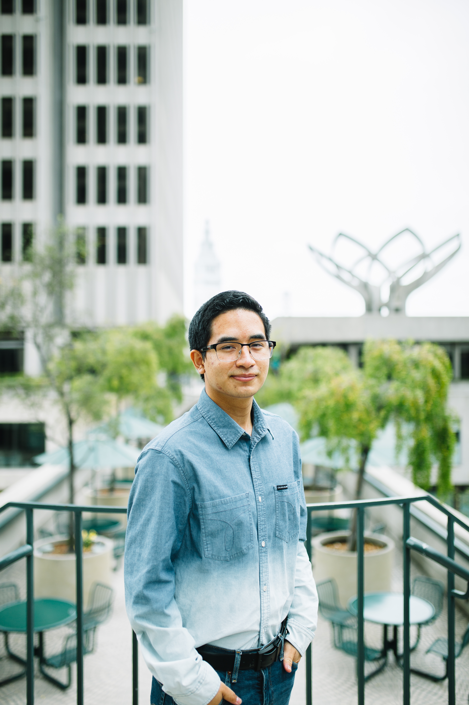

Mechanical Engineering student at Columbia University with an Aerospace minor, specializing in CAD, finite element analysis, PCB design, and rapid prototyping across aerospace, automotive, and biomedical systems.
Get to know the person behind the engineering designs and technical projects.

Hello! I am Gerald Aguirre, a dedicated Mechanical Engineering undergraduate with an Aerospace minor at Columbia University School of Engineering and Applied Science (Expected May 2027). My academic and extracurricular journey is driven by a deep fascination with how physical systems come together, from conceptual CAD sketching and advanced finite element analysis to hands-on PCB fabrication and rapid prototyping.
Whether designing primary airframe structures for the Columbia Airplane Club, contributing to microgravity additive manufacturing systems with the Columbia Space Initiative, or conducting biomedical research in the Dong Group and ROAR Lab, I thrive on solving complex, multidisciplinary engineering challenges. Beyond technical work, I am bilingual in Spanish and deeply committed to pushing the boundaries of aerospace, automotive, and medical hardware design.
Rigorous academic foundation at Columbia University School of Engineering and Applied Science.
B.S. Mechanical Engineering; Minor in Aerospace Engineering
Comprehensive engineering competencies spanning computer-aided design, advanced simulation, manufacturing, and programming.
Hands-on leadership and technical contributions in engineering research, student design teams, and computer science.
Click on any project below to inspect detailed specifications, implementation steps, and high-resolution previews.
Professional credentials and academic recognition supporting engineering excellence.